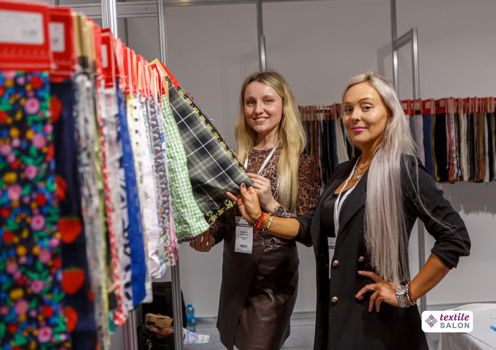
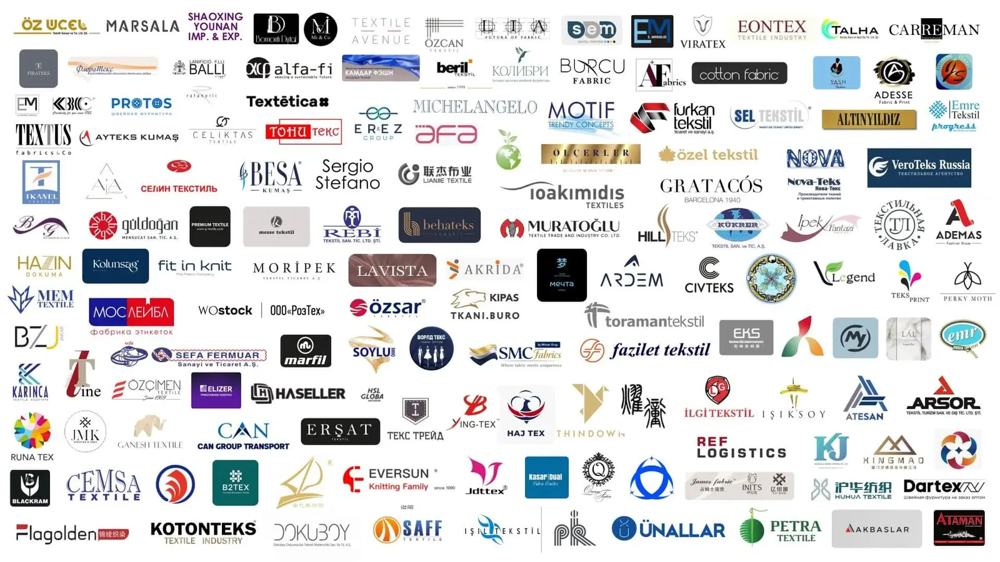
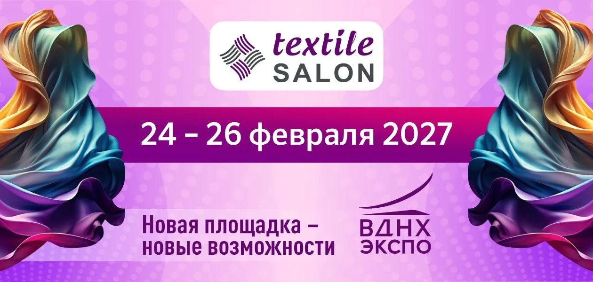

Найти материалы
и новых поставщиков
Посмотрите образцы вживую, сравните коллекции и обсудите сотрудничество напрямую с представителями фабрик.
Textile Salon · 19-я международная
Найдите материалы и поставщиков для новой коллекции — или представьте свою продукцию профессиональным покупателям. Textile Salon — место встречи фабрик, брендов одежды, дизайнеров и швейных предприятий.
Выберите свой формат: посетить выставку или представить свою продукцию.

Профессиональная
аудиторияИтоги сентября 2026
Почему Textile Salon
Textile Salon и выставка CPM проходят в одни сроки на ВДНХ. Синергия крупнейших fashion-выставок — максимум результата от участия.
Выставка проходит, когда производители одежды формируют заказы на коллекции следующего сезона.
Крупнейшая в России выставка тканей для производства одежды по количеству фабрик из Турции и Европы.
Два пути — одна выставка
Сразу к тому, что важно вашему бизнесу.
Посмотрите образцы вживую, сравните коллекции и обсудите сотрудничество напрямую с представителями фабрик.
Ваши покупатели уже приходят на выставку: в сентябре 2026 года — 5 286 деловых посетителей из 83 регионов.
Итоги сентября 2026 года. Формат стенда и условия обсудим лично.
Обсудить участиеУчастники и отзывы

«Участвуем впервые в Textile Salon, но что мы увидели на открытии — выставка очень профессиональная. Первый день был очень продуктивным, мы собрали заказы на выставке».
«Организация выставки всегда на высшем уровне, большой поток посетителей к нам: и постоянные наши клиенты за новинками приезжают, и много новых партнеров именно с этой выставки у нас».
«Экспозиция TEXTILE SALON — это ключ для открытия и освоения Российского рынка в сфере производства тканей для одежды».
Отзывы и логотипы — с действующего сайта textile-salon.ru.
Встречаемся вживую
Фотографии предыдущих выставок. Архивные материалы сохраняются.
Подготовьтесь к визиту
Место встречи
Проспект Мира, д. 119, стр. 20.
Метро «ВДНХ» и «Ботанический сад».

24–26 ФЕВРАЛЯ 2027
Участие в выставке
Оставьте контакты, чтобы обсудить стенд и условия участия с организатором.